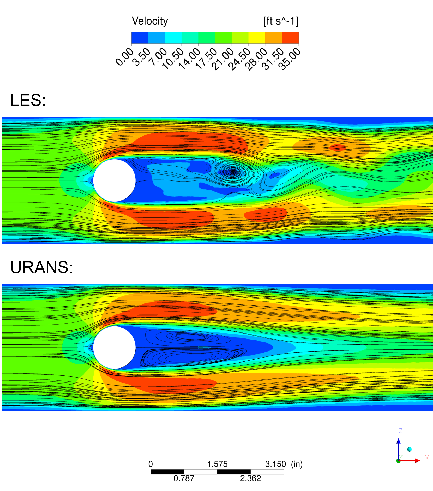

about me
Hi, I enjoy doing pretty much anything with friends and loved ones. Whether that is traveling, or simply sitting around and chatting. I made this website because I wanted to have a carousel of my favorite photos. My good friend nick told me he was building a personal website, as a means to replace social media. I thought this was a great idea (so i stole it).
Professionally, I am a mechanical engineer with a bachelor's and
master's degree in mechanical engineering. In my master's program, I
focused on computational modeling and simulation. In my day-to-day, I
use computational fluid dynamics (CFD) to analyze components/cavitives within jet
engines.
Below is a very simple example I made for a CFD course at UConn. Disturbances to air, such as the blockage in this pipe, cause turbulence.
Modeling turbulence is a complex task that requires significant computational resources.
This fun exercise demonstrates the differences in resolution between two models. Despite the fact that these two models were set up identically, it does not take an engineer to spot the differences in the results:
